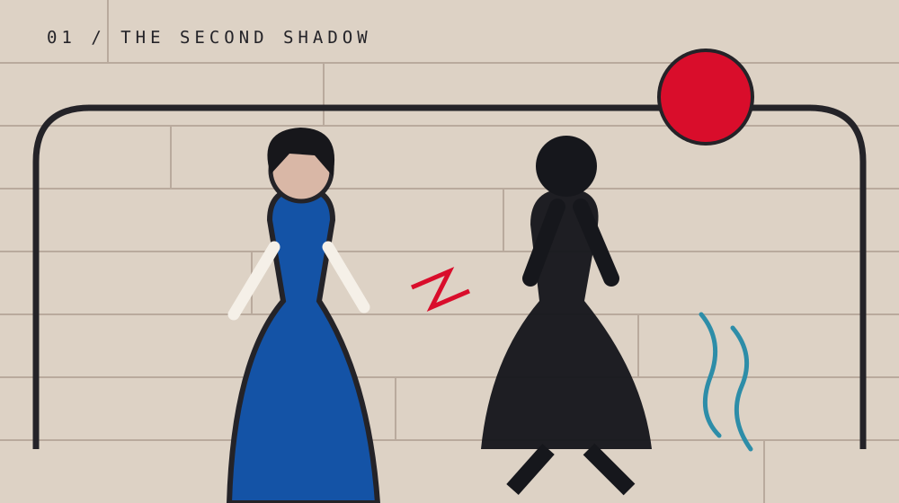
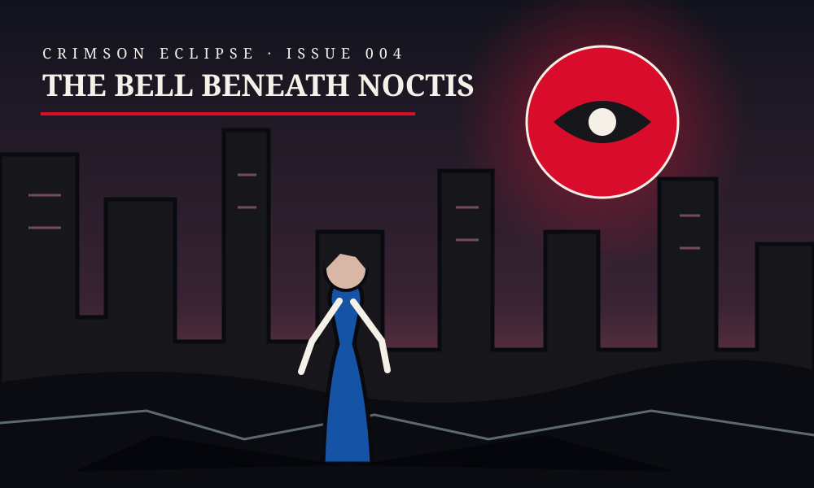
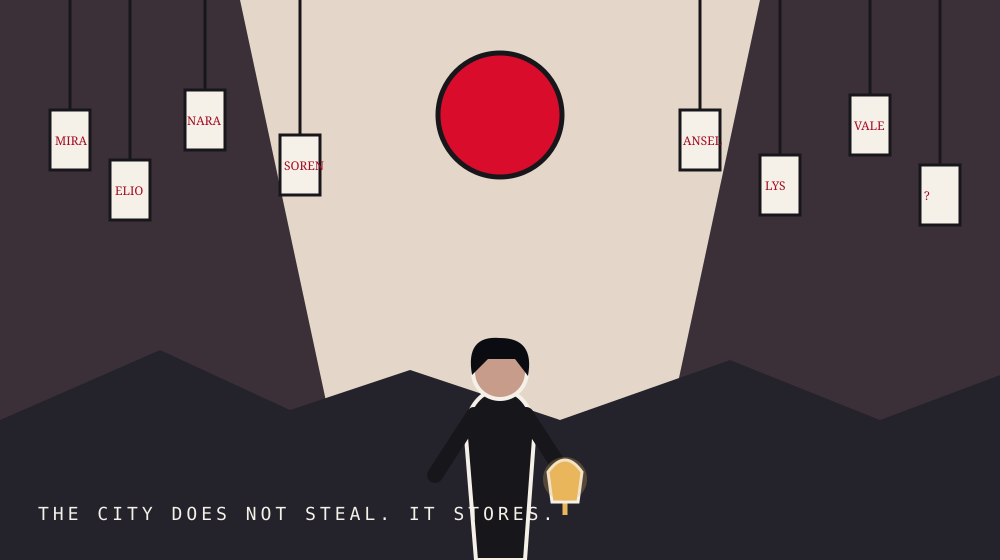
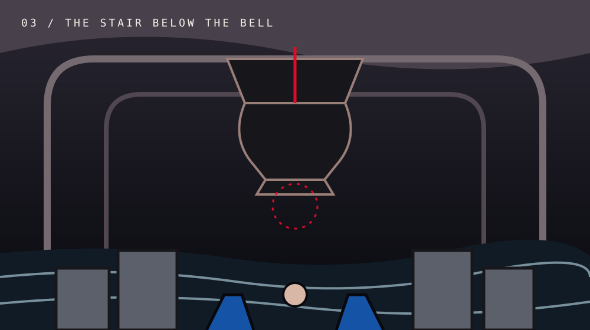
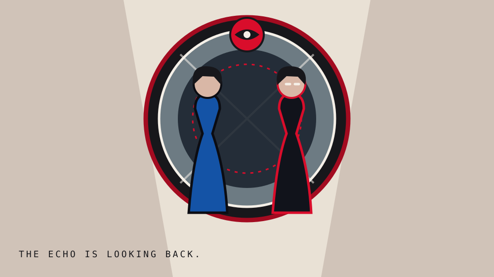

01 / THE SECOND SHADOW
The shadow turns toward Mara and names the keeper as the one who carries the key. Orin says the voice does not belong to her shadow.
CHAPTER 04 · NOCTIS ARC
In a city that has forgotten sunrise, one impossible bell begins to ring.

Mara's shadow steps away from the wall. Orin's coat drips seawater onto dry stone. A bell rings beneath Noctis, though every bell in the city was silenced a century ago.

The shadow turns toward Mara and names the keeper as the one who carries the key. Orin says the voice does not belong to her shadow.

Sable leads Mara through a market of hanging names. The city stores memories here, but someone has begun taking them down.

A bronze bell hangs above water that reflects a vanished sky. It has no clapper, yet Mara's compass points straight down.

The bell sounds without moving. Mara hears her grandmother laugh. Behind glass stands another girl in the same blue coat: “You are the echo. I am the memory.”
THE CLIFFHANGER
Every shadow in Noctis turns toward the chamber. The other Mara raises her hand and mouths the same three words.
The moon is listening.